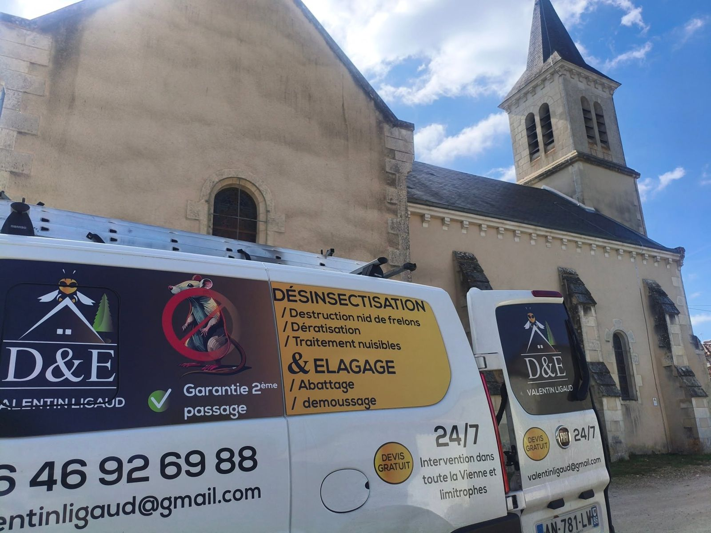
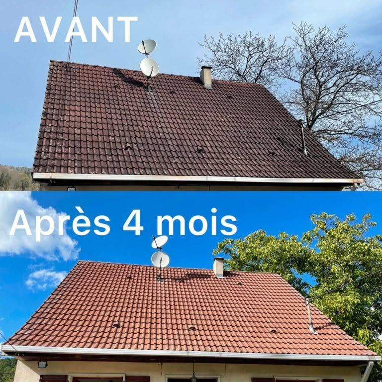
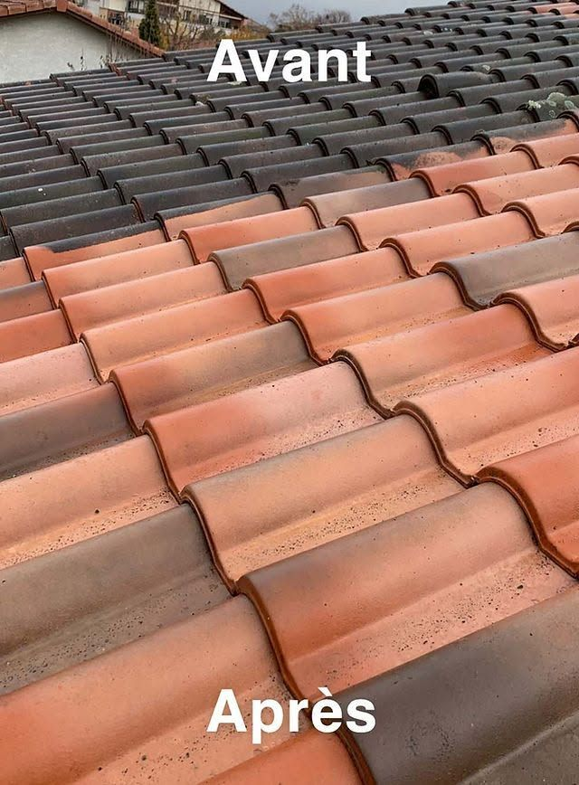
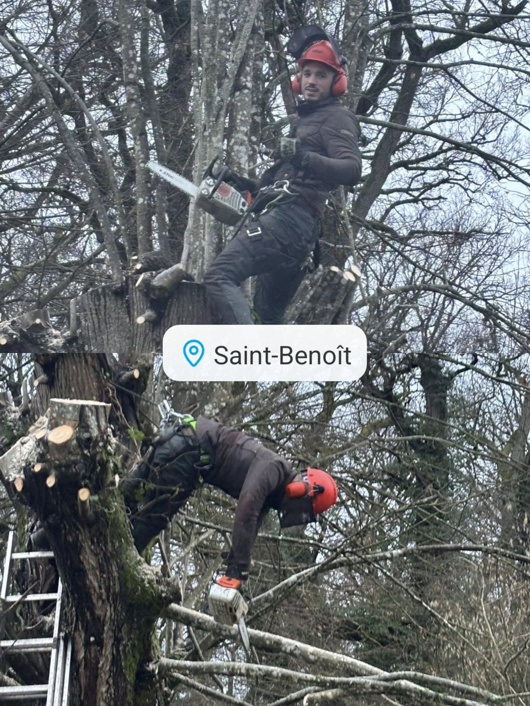
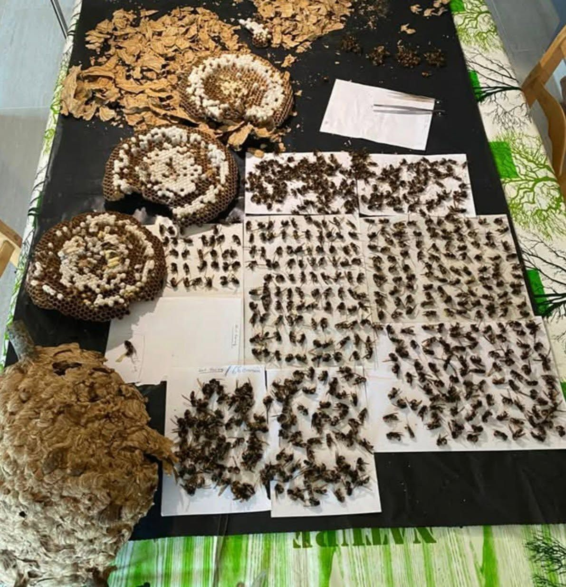
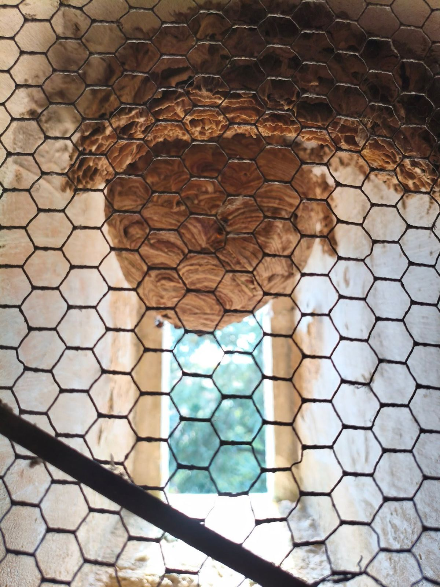

Vienne (86) & départements limitrophes
Toitures, arbres, nuisibles : un artisan local à votre service.
Équipé et réactif, avec devis gratuit et garantie de second passage. Un doute ? Envoyez-moi une photo sur WhatsApp pour un premier diagnostic.

Nos métiers
Trois savoir-faire, un seul interlocuteur
01
Démoussage
Mousses, lichens et salissures abîment les tuiles et favorisent les infiltrations. Un démoussage régulier prolonge la vie de votre toiture et lui rend son aspect d'origine.
- Démoussage de toiture (tuiles, ardoises)
- Traitement anti-mousse curatif et préventif
- Nettoyage des tuiles et des faîtages
- Résultat visible et durable dans les mois qui suivent


02
Élagage
Taille, sécurisation ou abattage : nous intervenons en hauteur, y compris au plus près des habitations, en démontant l'arbre morceau par morceau quand il le faut.
- Élagage et taille d'entretien
- Abattage d'arbres, en démontage si nécessaire
- Sécurisation des arbres dangereux
- Travail en hauteur avec équipement de sécurité

03
Désinsectisation
Un nid de frelons près de chez vous ou des rongeurs dans le grenier ? Nous intervenons rapidement, avec une garantie de second passage.
- Destruction de nids de frelons asiatiques et européens, guêpes
- Dératisation : rats, souris, rongeurs
- Traitement des nuisibles (habitations, bâtiments, exploitations)
- Garantie 2e passage


Diagnostic photo
Vous avez un doute ? Envoyez-moi une photo.
Ne prenez pas de risque : j'effectue un diagnostic visuel permettant d'établir si la présence de nuisibles semble avérée ou si un arbre est menaçant.
- Prenez une photo du nid, des traces ou de l'arbre, à distance et en sécurité.
- Envoyez-la sur WhatsApp avec votre commune.
- Recevez mon avis et, si besoin, un devis gratuit.
WhatsApp : 06 46 92 69 88
Diagnostic visuel sur photo, envoyée par WhatsApp.
Devis gratuit et sans engagement.
Passage garanti si le traitement doit être renouvelé.
Toute la Vienne et les départements limitrophes.
Collectivités & communes
Vous êtes une commune intéressée pour travailler en partenariat avec D&E ?
Nous pouvons établir un contrat annuel afin de vous éviter les phases de recherche, d'établir une relation de confiance et de prioriser vos demandes.
- 01Contrat annuel
Un cadre clair pour l'année, sans relancer de consultation à chaque besoin.
- 02Relation de confiance
Un interlocuteur unique qui connaît votre territoire et vos bâtiments.
- 03Demandes prioritaires
Vos interventions passent en priorité : nids de frelons, arbres dangereux, nuisibles.
Contact & devis gratuit
Une toiture à démousser, un arbre à tailler, un nid de frelons ? Appelez, écrivez ou envoyez une photo sur WhatsApp.